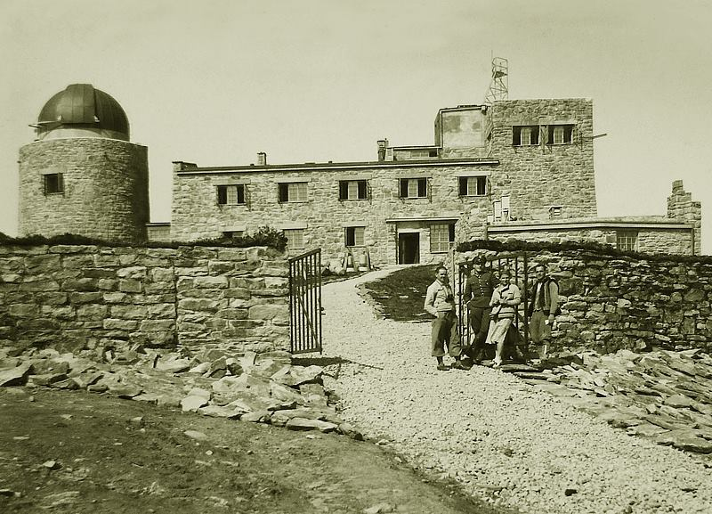
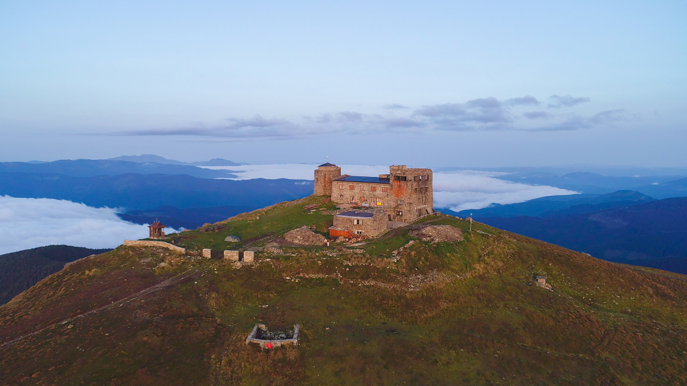

Зміст
- Будівництво обсерваторії "Білий слон"
- Історія створення обсерваторії
- Реконструкція обсерваторії
- Як дістатися до Обсерваторії Білий Слон
Будівництво обсерваторії "Білий слон"
Будівництво обсерваторії "Білий слон" на горі Піп-Іван Чорногірський (з цього двотисячника стартує маршрут по Чорногірському хребту) розпочалося влітку 1936 року за проектом архітекторів К. Марчевського та Й. Погоського (на закритому конкурсі його було визнано найкращим), а у липні 1938 року міністерством протиповітряної оборони Польщі його було завершено. Станція побудована на висоті 2028 метрів над рівнем моря. Завдяки їй гору Піп-Іван Чорногірський видно з довколишніх карпатських вершин. Будинок має форму дзеркального відбитку латинської літери "L", а вгорі розташована астрономічна вежа з мідним куполом діаметром 10 метрів і сучасним дорогим телескопом (купол після Другої світової війни кудись зник і подейкують, що у ньому й досі варять сир десь у глибині Карпат). Товщина стін цієї будівлі становить 1,5 м, тут є 43 приміщення і 57 вікон. Двосхилий дах було накрито мідною бляхою. А два поверхи зі східного боку і п'ять рівнів будівлі із західного роблять споруду величною і недосяжною. Хоча ходять чутки, що сама обсерваторія розташована глибоко в надрах гори, а будівля вгорі - тільки для краси. Обсерваторію використовували не тільки для наукових досліджень, а й як військовий об'єкт. Незважаючи на те, що в обсерваторії дослідження проводили неповних 14 місяців, цей період увійшов в українську та польську історію. За час свого існування вона кілька разів міняла власників, проте жоден з них не затримався тут надовго. Спочатку були поляки, що напередодні Другої світової війни евакуювалися вглиб Карпат, потім були й угорські війська, й Радянська влада. Перше обсерваційне фотографування новим апаратом виконав 1937 року Мацей Бєліцький. Йому вдалося отримати чотири фотографії планетоїда Інтерамня. Кількома місяцями пізніше було зроблено дві фотографії комети Юрофф-Ахмаров-Гассель. Про ці роботи відомо з журнальних публікацій. Отримані таким чином дані були опубліковані у журналі Варшавської обсерваторії 19 та 31 січня 1938 року. А згодом, з 19 квітня до 4 травня 1939 року опубліковано дві фотографії комети Юрофф-Ахмаров-Гассель. Надбання цього періоду велика кількість фотографічного матеріалу. Але брак знань не дозволив як слід оцінити важливість напрацьованого. Навесні 1939 року до роботи в обсерваторії приступив доктор наук Володимир Зон. Він фотографував зірки у двох кольорах, які вирізнялися інтенсивністю свічення на чорно-білих фотознімках. На такій плівці неможливо зафіксувати червоний колір зірок, тому й порівняння інтенсивності світіння білих та жовтих зірок було неможливим. Робота стосувалася сузір'я Чумацького Шляху. Недопрацьований матеріал доктора Зона, що зберігався у Варшаві, зазнав повного знищення під час Варшавського повстання 1944 року.
Історія створення обсерваторії
Міністерство ВПС Польщі ініціювало закладення фундаменту Обсерваторії на Піп Івані в 1936 році (до 1939 дана територія належала Польщі). Підготовчі та будівельні роботи тривали 2 роки. Для побудови використовували місцеві гірські породи, які до підніжжя гори доставляли кіньми або робочі самостійно переносили будівельні матеріали, без вантажних візків.
В обсерваторії "Білий слон" були проведені водопровід і обладнана котельня, що дозволяло опалювати всі приміщення будівлі. Необхідно взяти до відома, що взимку на хребті лежать багатометрові шари снігу, а температура може опускатися до -30 градусів! Інженерам вдалося спроектувати споруду таким чином, щоб вчені і обслуговуючий персонал могли перебувати там цілий рік. 1938 ознаменував відкриття обсерваторії Білий слон. Приміщення складалося з житлової частини, технічних приміщень та астрономічної вежі.
В обсерваторію був поміщений астрограф з об'єктивом 33 см в діаметрі. Доставлений він був прямо з Единбургу. З його допомогою група дослідників могла стежити за різними космічними об'єктами: планети, комети, робити фотознімки різних небесних тіл і вивчати їх стан в космосі.
На жаль, військові події 1939-1945 стали фатальними для обсерваторії. Весь персонал, який займався обслуговуванням обсерваторії, покинув її. Все обладнання, яке можна було демонтувати - вивезли. А згодом, місцевими жителями було розкрадено все, що можна було винести.
Реконструкція обсерваторії
У 2012 почалися роботи, націлені на реконструкцію обсерваторії в Карпатах, ініційовані Польським Міністерством культури. Повторно зводилися стіни, які забезпечували захист від вітру і снігу. Камені були очищені від графіті, вивезені тонни сміття. Житлова зона була значно розширена. За наявного фотознімку відтворили металевий дах. У роботі по реконструкції були задіяні волонтери, польські фахівці, будівельники, техніки. Першочерговою метою відновлення робіт по реконструкції було створення міжнародної школи українсько-польських рятувальників. В районі Білого слона зустрічаються різні ландшафти, а погода досить нестабільна. Такі умови ідеальні для проведення навчань пошуково-рятувальних груп. Крім того, у відреставрованій обсерваторії передбачалося створення притулку для туристів.
Як дістатися до Обсерваторії Білий Слон
Відправитися в похід на Чорну гору можна різними пішими маршрутами. До найпопулярніших відносять 3 туристичних трекінгу:
- Найкоротший шлях - з села Дземброня, минаючи гору Вухатий Камінь або Смотрич.
- Від траси Верховина-Зелена до села Дземброня 5 км. Підйом бере свій початок з автобусної зупинки. Далі крутий шлях йде вгору під Смотричем в південному напрямку. По мірі набору висоти, стежка йде в ліс і далі на хребет до обсерваторії Білий Слон.
- З КПП Шибене через озеро Марічейка.
- Починається маршрут з прикордонного пункту в селі Шибене. Далі йдемо по густому лісі до полонини Веснарка. Звідси 3 км до оз.Марічейка. Залишилося пройти 4,5 км вгору по стежці через альпійські луки і ви потрапите до вершини.
- З полонини Гропа (прохід з Мармаросів на Чорногору).
Наші походи на Чорну гору:
- Сходження на Піп Іван Чорногірський 3-ти денний похід
- Чорногора від А до Я - похід в Карпати 6-ти денний похід
- Гуцульські Альпи - похід по Карпатах 6-ти денний похід
- Білий Слон. Сходження на Піп Іван 3-ти денний похід